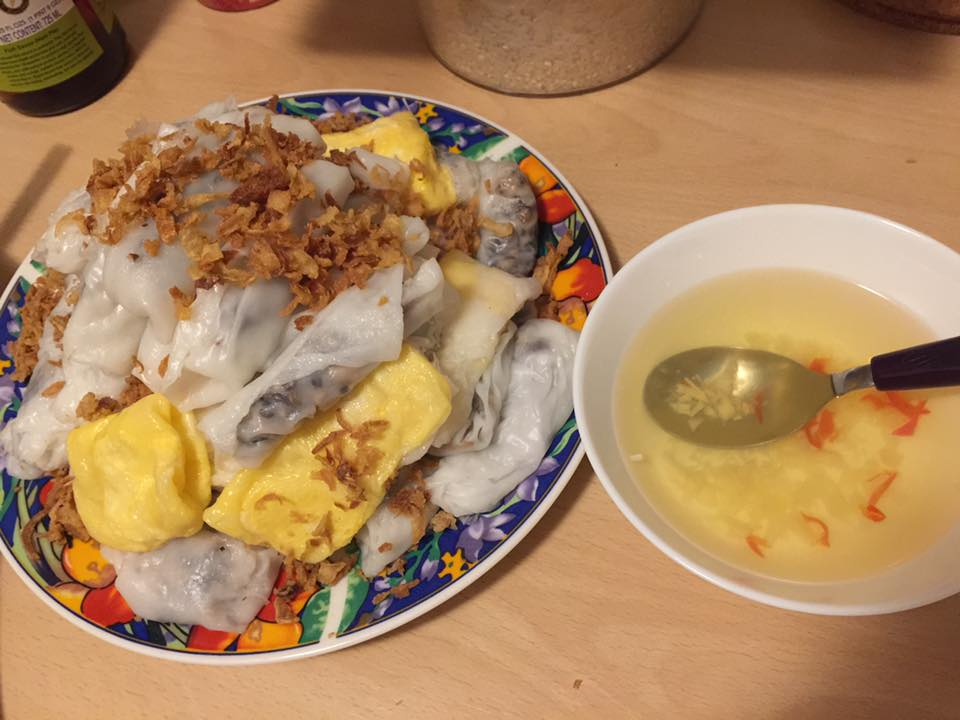

Rice Roll

Description
Best breakfast!!!
Ingredients
- Rice flour
- Ground pork
- Dried mushroom
- Shallot
- Fish sauce
- Lemon
- Sugar
Steps
- Mix rice flour with water
- Stir fry pork with shallot and mushroom to make the filling
- Make thin rice pancakes in the pan
- Take rice pancakes out to a cutting board, put filling in and roll
- Make fish sauce to dip the rice rolls